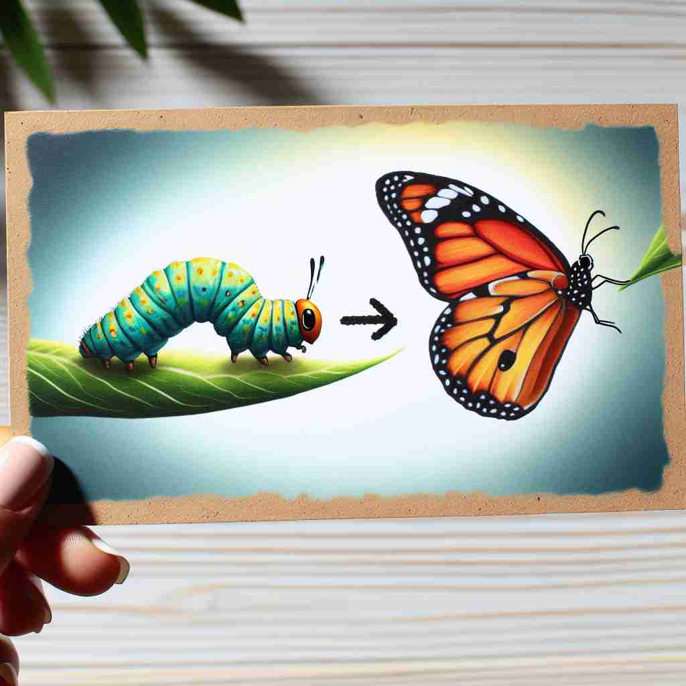

💬 The scientist is happy with the result of the experiment.

💬 She is happy about her test result.

💬 An apple tree is a result from a seed planted in the soil.

💬 The butterfly is the result of transformation from the caterpillar.
🔈 [rɪ'zʌlt]
🗝️ n. something that happens or exists because of something else
🖼️ 在一个科学实验室里，研究人员将化学溶液A和B混合在一个烧杯中。经过几分钟的观察，他们发现液体变成了蓝色。这是实验的'result'，即因为某个原因而产生的结果。
🔍 想象'result'是一条因果链的终点。无论是名词还是动词用法，都涉及某事物（原因）导致另一事物（结果）的出现。这个核心概念贯穿了'result'的各种用法，帮助你更容易理解和记忆它的多重含义。
💬 The scientist is happy with the result of the experiment.
💬 She is happy about her test result.
💬 An apple tree is a result from a seed planted in the soil.
💬 The butterfly is the result of transformation from the caterpillar.
🌳 由词根 'sult'（跳跃、结果）加上前缀 're-'（再、回）构成，表示回到某一行为或事件后的结果。
💡 记忆 'result' 时，可以联想为 're-'（再）与 'sult'（跳跃）的组合，即再跳跃一次的结果。想象为某个行为之后的结果，帮助记住其意义。
🗝️ n. the final score in a sports contest
🖼️ 在一个灯火通明的足球场上，紧张的比赛终于结束，大屏幕上显示出比分：主队3，客队2。这就是比赛的'result'，运动竞赛的最终得分。
💬 The result of the football match was 2-1.
❓ 比赛的最终得分是之前所有行动的"结果"
🗝️ v. to happen or exist as a consequence of something
🖼️ 在一个忙碌的厨房里，一位新手厨师第一次尝试做蛋糕。他没有仔细按照食谱，不慎加了多余的糖，导致的'result'是蛋糕过于甜腻。
💬 His success resulted from years of hard work.
❓ 某事物作为另一事物的"结果"而发生或存在
🗝️ v. to end in a particular way
🖼️ 在一个激动人心的辩论赛上，双方选手都各自发表观点。经过激烈的交锋后，比赛'result'为某一队获胜，结束的方式是显而易见的。
💬 Their negotiations resulted in a new agreement.
❓ 某事以特定方式"结果"或结束